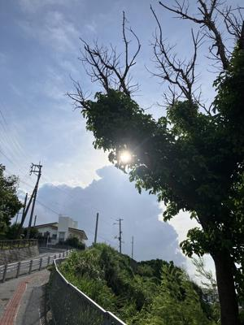
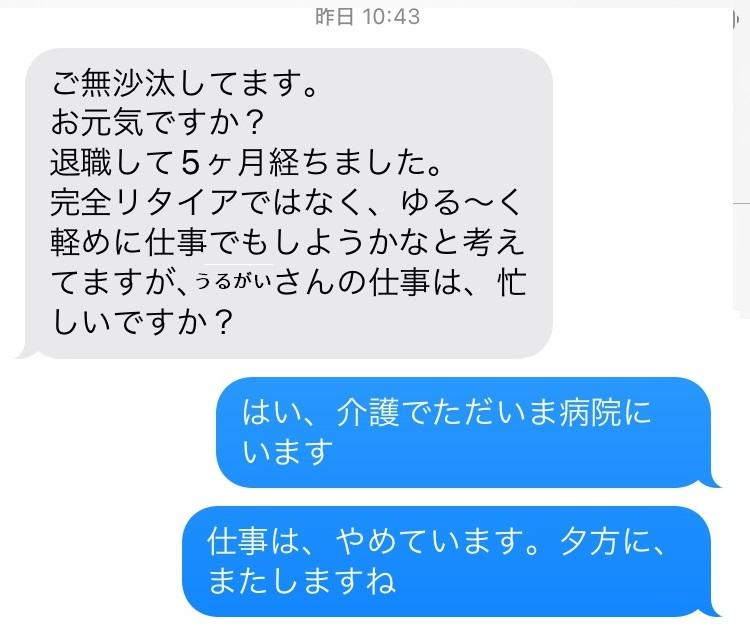

うるがいの話 ある日
最新: 仕事がしたいらしい【うるがいの話 ある日】とは 一日だけのプログです
『うるがいの話』の最新一日だけのプログで、通信料が少なく経済的だ。カニの画像をクリックすると全ての日付が載る『うるがいの話』サイトを表示します
|
|
【うるがいの話】 うるがい(ｳﾙｶﾞｲ urugai)とは、『もずくがに』の名前でとても大きくなります。 |
|---|---|
|
|
【カミマヤーの話】 猫のことを方言でマヤーといいます。カミマヤー（kamimayaa）とは、神の猫のことです。 |
|
【たながぁの音楽】 たながぁ（ﾀﾅｶﾞｰ tanagaa）とは手長えびのことで、何種類かあり大きいのは車 エビぐらいになります。 |

|
【ぶながぁの話】 ぶながぁ(ﾌﾞﾅｶﾞｰ bunagaa)とは、赤い髪の毛、赤い身体、そして身長は１ｍ２０ｃｍ ぐらい、川の蟹を食べているの目撃された。場所は沖縄県国頭郡大宜味村のと ある村僕の隣近所に住んでいる爺さんから、聞いた話です。 |
|
|
【ギーマの話】 ギーマ(giima)とは、山原の里山に咲くスズランに似た、 花を付けます。実は食べられます、 気が付くと口の周りが紫になっています。 |
2024年08月28日 (水）仕事がしたいらしい
14:54

月曜日、県立病院にいるとき、今年退職したもと後輩からＳＭＳが届いた。

『ゆる～く仕事がしたい』らしい。ウン、分かる、定年退職したやからは恐
らくほとんどが、そうだろう。でもハードルは高いぜと経験談を話す。来月
ハローワークの給付が終るらしい。給付の活動を尋ねると、研修や会社への
エントリーは一回もなく、ハローワークでの月２回の相談だけだと言う。ん
、そうだったけ。私は１１社も求人への応募活動したけどと話す、職務経歴
書や履歴書も作成していない。フムフム、親戚や知人のゆる～くできる仕事
を探した方がいいのではとアドバイスする。
台風１０号やばそう。
１４時４６分 ビットコインの総資産 ￥２４、９４８（↓１、４５３！）